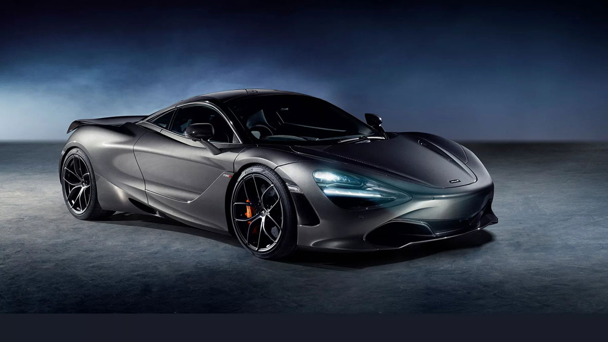
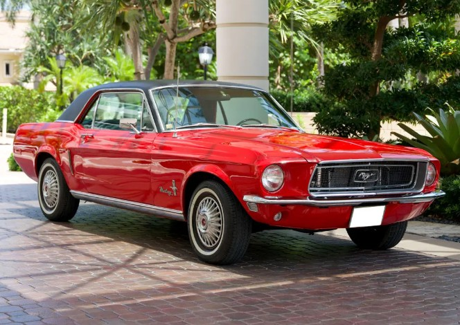
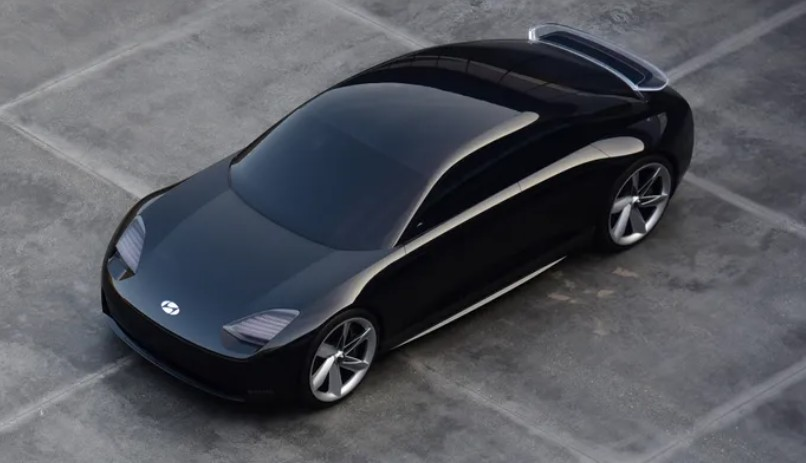

01 · The Beginning
How It All Started

Cars are something most people see almost every day. They are used to get to work, go to school, visit family, and travel to different places. Even though cars are a normal part of everyday life now, they have not always been around. The automobile has gone through many changes since it was first created. These changes have affected transportation, technology, business, and even popular culture.
Early automobiles were very different from the vehicles we drive today. They were slower, less comfortable, and did not have many of the safety features that modern drivers expect. During the early years, owning a car was also something that many people could not afford. Automobiles were expensive to build, and roads were not designed for the amount of traffic we see today.
One major change in automotive history was the development of assembly-line production. Henry Ford helped make cars more affordable by improving how vehicles were built. Instead of building each car separately, manufacturers could produce many vehicles more efficiently. This helped make car ownership possible for more families.
As automobiles became more common, cities and communities also started changing. Roads, highways, gas stations, and parking areas became important parts of everyday life. People had more freedom to travel longer distances, and cars became connected to independence and convenience.
02 · Appearance and Style
How Car Design Has Changed
Car design is one of the easiest ways to notice how much the automobile industry has changed. Older cars often had large bodies, rounded shapes, and simple interiors. Some classic cars are still popular today because of their unique appearance and the memories people connect with them.
As time passed, manufacturers started paying more attention to comfort, safety, and aerodynamics. Aerodynamics is about how air moves around an object. A car designed to move through air more easily can experience less air resistance. This is important for both performance and fuel efficiency.
"A car is more than transportation. Its design can show personality, creativity, and innovation."
Modern vehicles usually have smoother body shapes, improved lighting, larger screens, and more comfortable seating. Designers also think about how a vehicle looks while making sure it meets safety and performance needs. This is why car design involves more than just making something look attractive.
Color and personal style also play a big role in car culture. Some people prefer classic cars with original paint and parts, while others enjoy customizing newer vehicles with different wheels, body kits, and paint colors. These differences help make the automotive community interesting.
03 · Power and Engineering
Performance and What Is Under the Hood
Performance is another important part of the automotive industry. For many years, gasoline engines were the main source of power for cars. These engines use fuel to create energy that moves the vehicle. Different engine sizes and designs can affect how much power a car produces.
Some drivers care most about acceleration and speed, while others are more interested in fuel economy and reliability. Sports cars are usually designed with performance in mind, while many family vehicles focus more on comfort, space, and everyday use.
Manufacturers have also improved braking systems, suspension, and handling. These parts help drivers control their vehicles and make the driving experience more comfortable. Performance is not only about how fast a car can go. It also includes how safely and smoothly it operates.
04 · Modern Innovation
Technology Is Changing the Driving Experience

Technology has become a major part of modern vehicles. Many newer cars include touchscreen displays, backup cameras, navigation systems, and driver assistance features. These features can make driving easier and help drivers become more aware of what is happening around their vehicles.
Electric vehicles are another major development. Instead of using a traditional gasoline engine, electric vehicles use electric motors and batteries. They can help reduce pollution from driving, especially when the electricity used to charge them comes from cleaner energy sources.
Electric vehicles also have some differences that drivers need to consider. Charging time, driving range, battery cost, and the availability of charging stations can all affect whether an electric car is a good choice for someone. As technology improves, manufacturers are working to make these vehicles more practical for everyday use.
Another change is the development of driver assistance systems. Some vehicles can help maintain a safe distance from other cars, warn drivers about objects nearby, or assist with staying in a lane. These systems can be helpful, but drivers still need to pay attention and remain responsible for operating their vehicles.
05 · Looking Ahead
What Could the Future of Cars Look Like?

The future of cars will probably look different from what we are used to today. Electric vehicles are becoming more common, and companies continue to work on improving batteries and charging systems. These improvements may make electric transportation more convenient for people who travel long distances.
Autonomous driving is another area that gets a lot of attention. Some vehicles already have features that can assist with steering, braking, and maintaining speed. However, fully self-driving technology still has challenges involving safety, weather, road conditions,and regulations.
Sustainability will also be important. Car manufacturers are looking at ways to use materials more efficiently and reduce the environmental impact of making vehicles. The production of batteries and the disposal of old vehicle parts are also issues that need attention.
Overall, cars have come a long way from their early designs. They have become safer, more comfortable, and more advanced. Even though the industry continues to change, one thing remains the same: people depend on transportation to connect with their communities and the world around them.
I think the most interesting part of automotive history is that there is always something new being developed. Whether someone enjoys classic cars, sports cars, or electric vehicles, the automobile continues to be an important part of modern life.